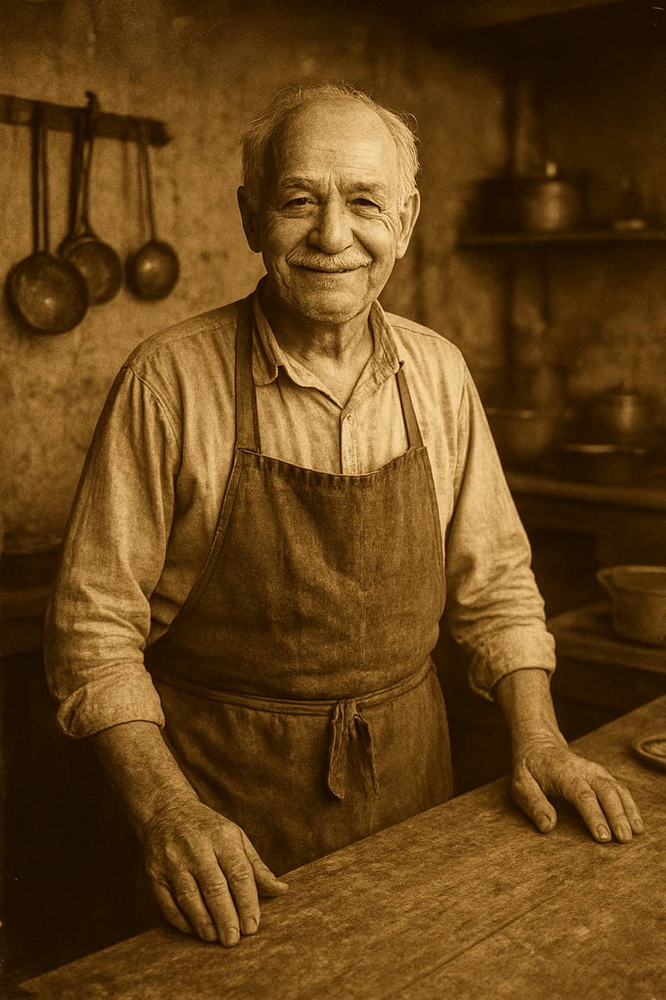

Nosotros
20 años sintiendo la gastronomia

Hace más de 20 años, Don Ernesto Ramírez abrió Don Fogón con un sueño claro: compartir el sabor casero de su infancia, inspirado en las recetas de su abuela y en la tradición de la cocina de leña. Lo que comenzó como una parrilla improvisada en su jardín, donde cocinaba para amigos y vecinos,pronto se convirtió en un lugar de convivencia, historias y buenos momentos.
Con el tiempo, Don Fogón creció sin perder su esencia. La pasión de Don Ernesto por la cocina tradicional sigue intacta, pero hoy el restaurante combina esos sabores clásicos con toques modernos que enriquecen cada plato. Los ingredientes frescos y la creatividad se unen para sorprender a quienes lo visitan.
Hoy, Don Fogón es un símbolo de tradición y hospitalidad. Cada comensal es recibido como parte de la familia, y cada platillo busca transmitir el calor y la autenticidad que dieron origen al lugar. Ya sea para una comida familiar, una reunión con amigos o una celebración especial, Don Fogón sigue siendo el espacio donde el buen sabor y la tradición se mantienen vivos.